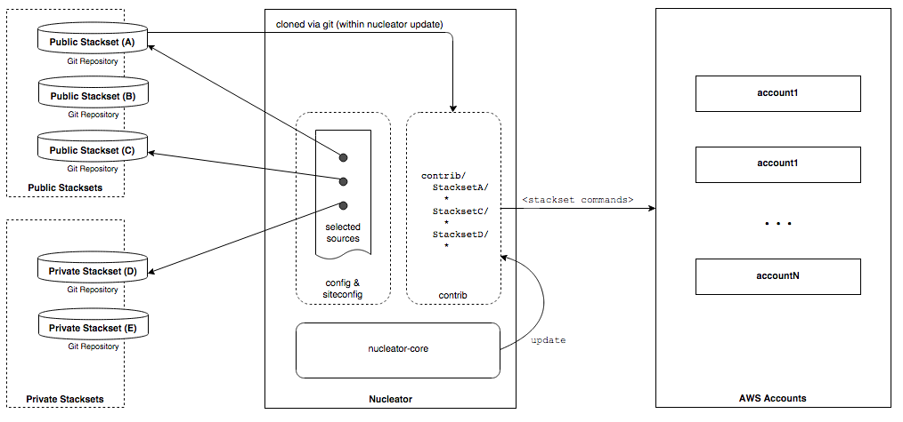

Nucleator's Customizable Core
How Nucleator works with git
Nucleator works closely with the git distributed version control system to provide flexibility in how you can use and combine Nucleator Stacksets to undertake operations within your AWS Accounts on your behalf. The following diagram shows how Nucleator and git interact, providing you with the ability to extend the initial capabilities that are present when you install Nucleator to include additional Stacksets that you specify.

You can use publicly available Nucleator Core Stacksets to get started quickly
When you install nucleator, a default set of Stacksets is specified in your list of Stackset sources. The list includes each of the Nucleator Core Stacksets that are maintained as part of the Nucleator distribution.
You can use these Stacksets to immediately set up one or more AWS Accounts using accumulated best practices.
You can also use Nucleator with Private Stacksets
You can use Nucleator with private Stacksets that are proprietary to you or to your internal or external customers. You can clone a publicly available Stackset, make some private modifications to it, maintain different versions of this Private copy over time and specify the desired version of your private repository in your Stackset sources.. You can also implement a totally new Stackset that needs to remain private, and easily share it in a private, secure, controlled manner with selected collaborators inside and outside your organization.
You can easily use the right combination of public and private stacksets to meet your needs, specifying a mix of both in your Stackset sources.
Next: How to Use Nucleator